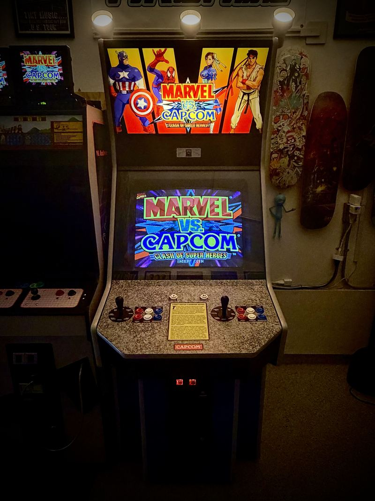
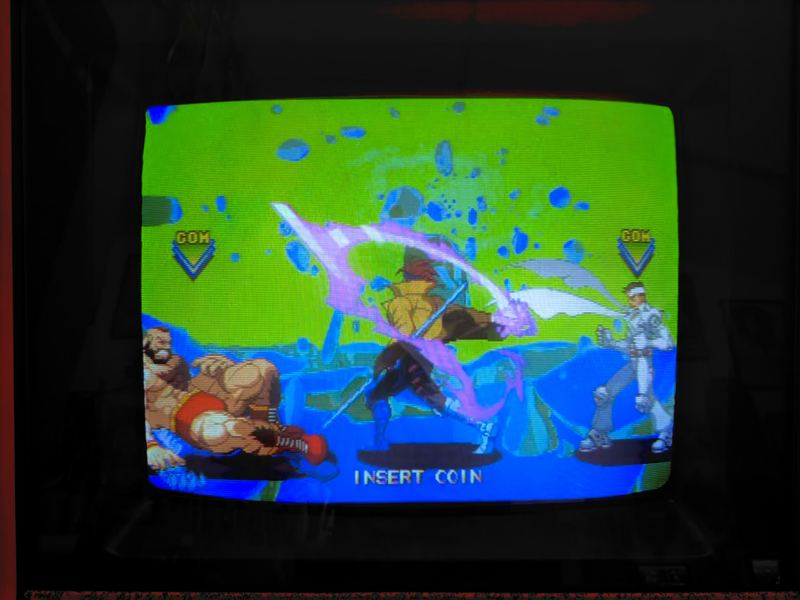
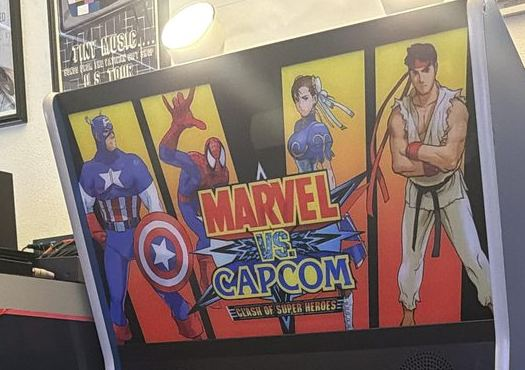
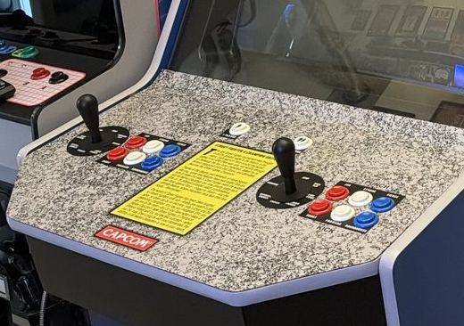
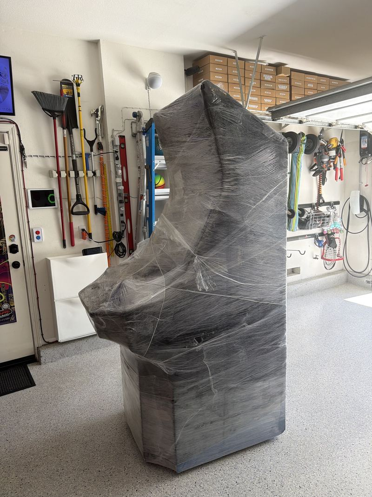
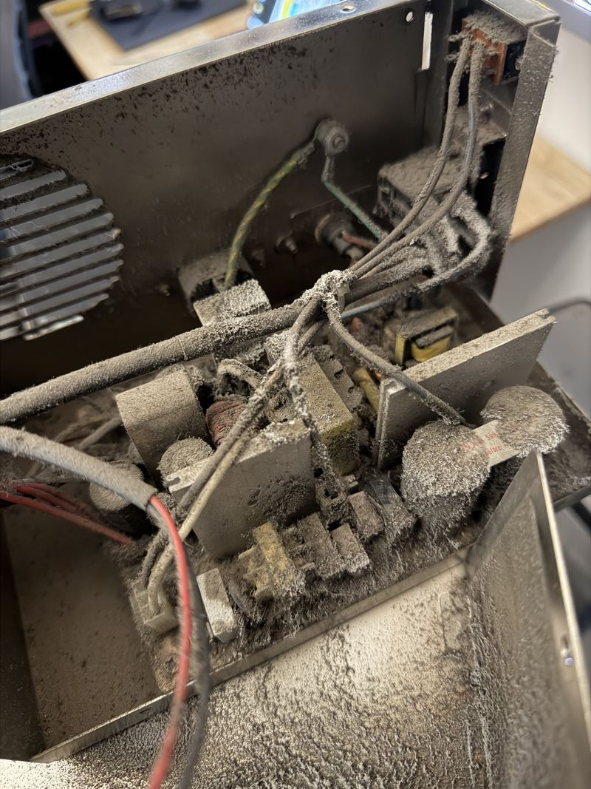
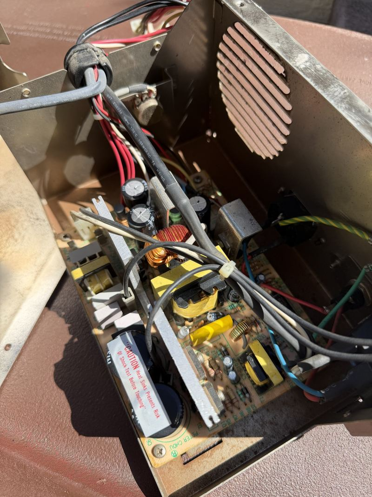
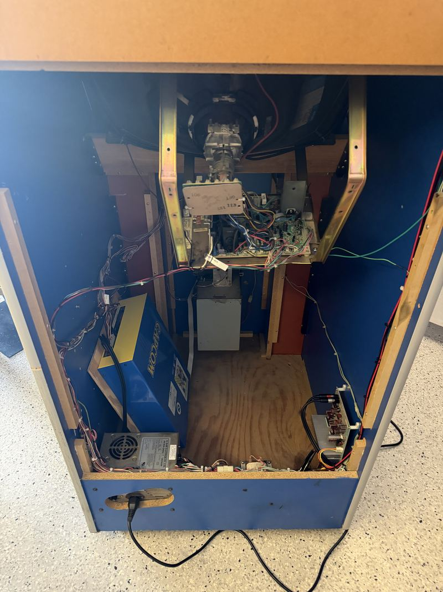
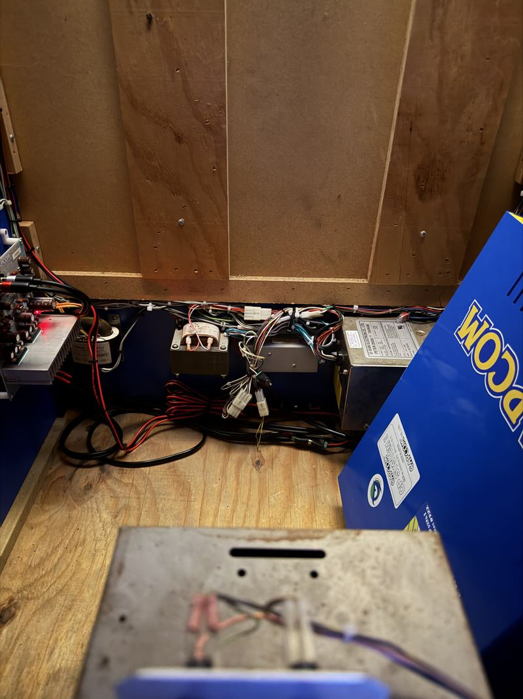

Big Blue
The big American cabinet at the end of the garage row — a Dynamo showcase cab in Capcom colors, rebuilt from the power supply up, running Marvel vs. Capcom on free play.
Not every great arcade cabinet came out of Japan. Through the eighties and nineties, Dynamo built cabinets in Texas for the American market — big, square-shouldered, generously proportioned things designed to take a JAMMA board and a beating in equal measure. Operators loved them because they were serviceable and they lasted. Collectors love them now for the same reason, plus one more: a Dynamo is a canvas. Swap the board, swap the marquee, swap the art, and the cabinet becomes whatever you want it to be.
It started life as a Street Fighter II: Champion Edition cabinet, which is exactly the point — a Dynamo is built to be reconfigured, and this one has been. Today it is the biggest machine in the garage arcade and the one people walk toward first. It wears Capcom blue with a gold Capcom decal on the flank, a granite-pattern control panel with two full six-button layouts, and a Marvel vs. Capcom marquee lit up over the top. It goes by Big Blue for reasons nobody has ever needed explained.

What it runs
Most of the time, Marvel vs. Capcom: Clash of Super Heroes — Capcom's 1998 crossover fighter, the game that let Ryu throw hands with Captain America and somehow made it feel inevitable. Two-on-two tag fighting, assists flying, combos that climb the entire height of the screen. Six buttons per player, two joysticks, no coins required.
Most of the time, but not always: the cabinet is not tied to one game. What is actually inside it is a Darksoft CPS-2 multi housed in a Jasen's Customs case, not a single-game board. Original CPS-2 boards came region-locked and battery-backed, and when that battery died the board suicided and took the game with it. The Darksoft kit sidesteps the whole problem: one board, no suicide battery to fear, and the entire CPS-2 library selectable from a menu. So Marvel vs. Capcom is what tends to be up on the screen, but Street Fighter Alpha, Vampire Savior, Progear and the rest of the catalog are one reboot away.
The sound comes through Capcom's Q-Sound hardware, which is a genuinely strange and wonderful bit of nineties engineering: a positional audio process that widens a two-speaker stage until effects seem to come from outside the cabinet. On a machine this size, with the speakers up in the marquee shroud, it does exactly what Capcom's engineers were hoping for.
Work log
Everything that has been done to it since it arrived. It began life as a Street Fighter II: Champion Edition cabinet — Dynamo built these to be reconfigured, and this one has been.
- Darksoft CPS-2 multi fitted — In a Jasen's Customs case, replacing the single-game board.
- Power supply recapped — The OEM supply rebuilt and voltages trimmed to spec.
- Q-Sound amp repaired — RCA jack reflow on the CPB-001A — small fix, big soundstage.
- Joysticks and switches replaced — New sticks and microswitches throughout both panels.
- Control panel overlay replaced — Fresh CPO over the granite laminate.
- Capcom side art installed — The decal hunt that took longer than the electrical work.
- Custom monitor shroud — Plastic shroud made to fit by Chris Yabsley.
- Monitor glass replaced
- Monitor serviced — Gone over at Duffcon, 2024.



The work
It did not arrive looking like the machine at the top of this page. It turned up shrink-wrapped on the garage floor, plastic still on, the way big cabinets travel when someone wants them to survive the trip. Everything below happened after that photo.

Every cabinet in this arcade gets worked on rather than just parked, and Big Blue has had the most attention of any of the uprights. It started where every honest restoration starts — with the power supply. The cabinet's switching supply was fully rebuilt and the voltages trimmed to spec, because nothing else in a cab can be trusted until the rails are clean. Sagging voltage is the ghost behind half the faults people chase for weeks.
"Rebuilt" undersells the first step. The supply came out of the cabinet packed solid with dust — the kind of felted gray layer that builds up over years of a fan pulling air through a machine on a route. Components were not dirty so much as buried. The first job was simply finding the board again.


Next was the audio. A CPB-001A Q-Sound amplifier had a failing RCA jack, and a reflow brought the soundstage back — a small repair with a disproportionate payoff, which is the most satisfying category of fix there is.
Last came the cosmetics, and the longest wait. Correct Capcom-logo side art is not something you order on a Tuesday; the decal hunt took as long as the electrical work did. When it finally arrived and went on the cabinet, the machine stopped looking like a project and started looking like the centerpiece it is. The full bench log lives on the projects page →
Inside the cabinet
A Dynamo is a big empty box with good bones, and everything that makes it work is bolted to the walls of it. Open the back and the layout reads at a glance: monitor chassis up front, the board case low and central, the supply and the loom running down the side. It is a cabinet built to be worked on standing up, with a torch in one hand — which is exactly why operators kept them and why they are still worth restoring.


Dynamo
American showcase upright, JAMMA, in the garage arcade.
Darksoft CPS-2 multi
In a Jasen's Customs case — the full CPS-2 library, Q-Sound audio, no suicide battery.
Free play
PSU rebuilt, Q-Sound amp repaired, side art installed.
Big Blue anchors the end of the garage row, next to the VS. UniSystem, Donkey Kong, and the Mario Bros. widebody. See the whole lineup →